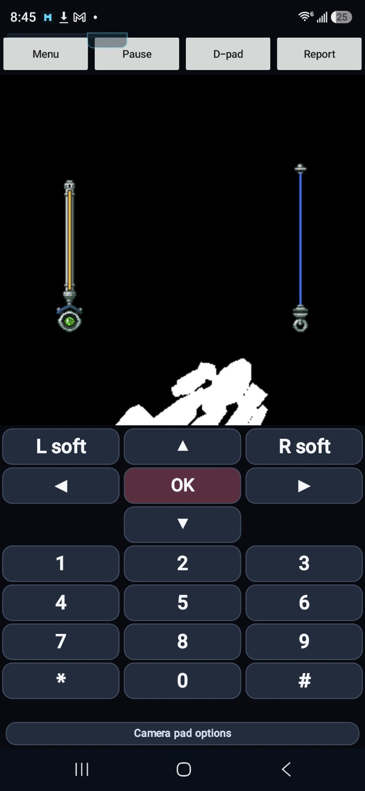
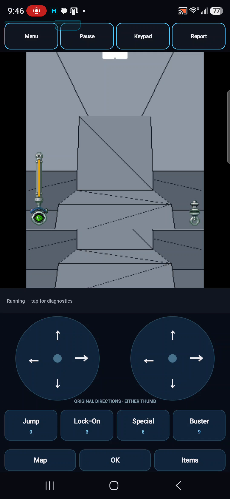
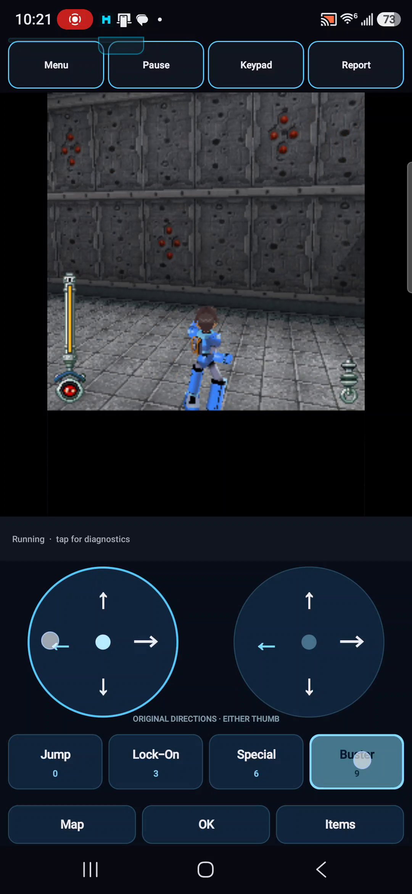

Rockman kept giving us a black world, and eventually I put it aside. Then we worked on Monster Hunter i. Its own 3D problems gave us something useful to bring back to Rockman. We started getting a mesh, then more of the textures, until Mega Man finally got the rest of himself back.
Everything except the picture
Rockman could keep an English HUD alive over an entirely black playfield. The item menu opened, moved through its entries and closed again. Underneath, the original game kept submitting drawing work. The 0.1.7 observation records no caught game exceptions and no GL errors. None of that put a stage on the screen.R02
We had to look beyond one more missing API method and start decoding the actual models and world. The character’s Figure data was one problem. The stage’s D4D data was another. The game was running without showing us either of them.
I remember trying and trying, shelving it, then returning after our work on Monster Hunter i. The checkpoints keep the intermediate failures between those memories. There was quite a lot between a black screen and the world finally appearing.R01
A very encouraging wrong answer
By 0.2.3, we had something unmistakably Mega Man-shaped. It was white, oversized and liable to leave the viewport when the camera moved. After the black screen, at least we had a shape to investigate.R03

Recognizable at last. The oversized white silhouette belonged to an experimental transform, not a finished rendering path.
Open the image for the full original view.
R16The awkward part was why it appeared. An experimental matrix order had accidentally pushed the raw model coordinates farther from the camera. The investigation put a roughly 187-unit character only about five world units from that camera. The silhouette was a clue to a size mismatch, even though the experiment that exposed it was the wrong final transform.R03
The next probe restored the intended view/object order, removed a second camera-axis conversion and tried a 1/64 model scale. Other scales were logged alongside it. The goal was to get the character into the view for a reason the renderer could keep using.R04
The GPU had a picture. The phone did not.
Then we had a particularly irritating split. A CPU-drawn orange ROCKMAN rectangle and cyan marker appeared exactly where the model was predicted to be. The actual GLES triangles still failed to reach the normal display. We could put a marker in the right place without getting the model itself onto the screen.R05
The missing connection sat between the GPU’s color buffer and the bitmap Android was presenting. The 0.2.7 probe read back a small region: 2,992 nonblack GPU pixels. It copied all 2,992 into the visible bitmap. The phone video finally showed those changing pixels inside the marker.R06
Once that little window worked, the next pass could widen it to the full 240×240 3D layer and remove the colored diagnostic furniture. Figure geometry now appeared across the normal viewport. The world behind it was still absent: loading the stage file had never been the same thing as decoding its contents.R06R07
Monster Hunter brings something back
The stage decoder eventually found 3,241 positions and 2,497 triangles in the original serialized objects. Rockman 0.3.2 could render a live world mesh. Visually, it was one flat-colored mass, which made a correct floor and a giant wrong polygon annoyingly hard to tell apart.R08R09
Here the notes name the crossover directly. Monster Hunter i 0.0.7 had taught us to check surface orientation and measure near-plane behavior. In Rockman 0.3.3, we kept Rockman’s own camera and rendering path, separated the surface groups into neutral shades, and laid a depth-tested wireframe over the triangles. Now we could see the shape of the world we were recovering.R09

The mesh world survived into this later phone recording. There are actual surfaces to investigate now; the textures are still missing.
Open the image for the full original view.
R16Monster Hunter’s decoder knowledge helped again with the shared model and animation formats. Its renderer could not simply be dropped in: Monster Hunter used a different DoJa 3D API. The useful transfer was understanding the data and the mistakes, while Rockman continued through its own D4D/GLES path.R12
The floor covered the instructions
Once we had a stage, the player appeared stuck. The original mission briefing was waiting for Center/OK before allowing movement. Our final 3D merge had painted the stage over that briefing. The button was there; the newly visible world had covered the instruction telling me to press it.R10
The repair followed the game’s draw order. Merge the 3D scene when the game flushes it, then let the HUD and briefing draw on top. The later unlock should present that already-composed picture. Directions could finally be judged after the native gate had actually opened.R10
Turning had a separate trap waiting. The game asked for an eight-degree rotation; the host passed eight straight to sine and cosine as radians. That turns a gentle curve into roughly a 98-degree heading change. Version 0.3.6 converted degrees inside the rotation method, preserving the camera convention that had taken so much work to establish.R11
The rest of Mega Man
The same pass followed the stage’s original material references through to their images, UVs and vertex colors. Texture row order and palette colors had to match what the game’s converter already produced. The model path gained its original texture slots, materials and skeletal actions. The gray diagnostic surfaces could finally give way to what belonged there.R12R13

Blue armor, textured walls, a floor with its own surface. This is a full frame from the owner’s recording, three seconds in.
Open the image for the full original view.
R16“we werent just megaman shaped shadows! we were the full thing!”Wakka · remembering the breakthrough R01
The 0.3.6 phone review finally has textured player and enemy models, textured walls and floors, changing poses, and a first recording that reaches MISSION COMPLETE. The HUD and dialog stay visible over the scene. That was the full thing I’d been trying to get back, beyond the Mega Man-shaped shadow.R14
There was still work waiting. The arm could rise for a Buster press while the weapon-effect drawing path was absent, and audio had its own partial successes and rejected formats. But we were working inside a recognizable game now. The detour through Monster Hunter had helped us get there.R15
About these records
The pause and return are the owner’s recollection. The preserved 0.3.3 notes explicitly cite Monster Hunter i 0.0.7; later architecture notes credit shared model-format knowledge while distinguishing the two renderers. The mesh still shown here is from a later 0.3.5 recording, not a fabricated image of 0.3.3. The screenshot and extracted video frames are full, unretouched views; no new gameplay was run for this chapter. The 0.3.6 phone review establishes the visible texture/pose and mission-progress milestone, not a completed campaign or perfect camera, effects or audio. The nested README is stale, and the later 0.3.7 effects/audio candidate keeps its own uncompleted phone checks.
The receipts
Selected report lines, investigation notes and recorded feedback behind the story. Each receipt keeps its source and context.
R01 / Remembering the return to RockmanOwner recollection
Source: Wakka / archive conversation / October 30, 2026
Owner recollection supplied while assembling this chapter. The dated checkpoint notes below establish the renderer changes; this recollection supplies the pause, return and remembered experience.
“we tried and tried and eveuntually i gave up until after we had done work on monster hunter i” “monster hunter i helped us get to a mesh grid and then we were slowly able to get more and more textures to go until boom! we werent just megaman shaped shadows! we were the full thing!”
R02 / The HUD was alive over a black playfieldCheckpoint investigation notes
Source: Rockman v0.3.3 preservation / evidence/v0.1.7-video-observation.md · selected lines 3–12
Preserved inside the original 0.3.3 archive retained by the later checkpoint.
Source recording: `Screen_Recording_20260926_002703.mp4` (user device; not duplicated into this preservation ZIP to avoid unnecessary size). Observed behavior: - No runtime diagnostic/failure state during the recording. - English in-game HUD remains live over a black 3D playfield. - English item/menu UI opens, navigates, and closes normally. - Visible item list includes Energy Canteen, Hyper Cartridge, Bottle Rocket, Solver, and Thick Pipe. - This matches the report: game loop continues with zero caught exceptions and zero GL errors, while the current Graphics3D bridge records Figure/Group/Primitive submissions but does not yet decode scene/model geometry. Conclusion used for v0.1.8: stop chasing missing API methods and begin real 3D asset decoding/rendering. Figure MB/MBA/MBAC is the first bounded target; D4D Group/world geometry remains separate.
R03 / A recognizable silhouette, produced by the wrong transformCheckpoint investigation notes
Source: Rockman v0.3.3 preservation / evidence/v0.2.4-decision-from-v0.2.3.txt · selected lines 4–18
Preserved inside the original 0.3.3 archive retained by the later checkpoint.
Observed on-device in v0.2.3: - The white Figure output became unmistakably Rockman/Mega-Man shaped when the experimental object*view composition was rendered. - The shape remained oversized and moved in/out of the viewport as the game camera changed. - Runtime remained healthy: 1239 frames, 16542 draw calls, 0 GL errors, 0 caught game exceptions. - At one late camera pose, object*view put only selected body parts inside the frustum (72v arm 8/72, 132v leg 83/132, helmet/chest 0), matching the partial silhouette seen on screen. Reassessment: - Official DoJa Graphics3D transform semantics compose the current view transform with the supplied object transform as view*object. - The preserved Android host's Transform.lookAt implementation is already OpenGL-style -Z-forward. Therefore the bridge's extra DoJa +Z -> GLES -Z flip double-converts this host camera. - The game DEX constructs the gameplay camera from the matrix translation and forward/up basis, so the camera translation is game-world state rather than an arbitrary renderer offset. - At the v0.2.3 late pose, inverse(view) puts the camera at approximately [7.0, 4.1, 101.3] and the Rockman object origin at approximately [8.75, 0, 98.41], only about 4.9 world units apart. - Decoded bind-pose Rockman body data spans roughly 187 raw model units vertically. A 187-unit character cannot plausibly sit only ~5 world units from a third-person camera and fit the 60-degree view. Conclusion: The v0.2.3 object*view experiment was useful because it accidentally pushed raw model coordinates much farther from the camera and exposed a recognizable silhouette. It is not the final composition rule. The evidence now points to an implicit model-unit conversion missing from the MB/MBA/MBAC bridge path.
R04 / Restore the transform and investigate the model unitsCheckpoint investigation notes
Source: Rockman v0.3.3 preservation / evidence/v0.2.4-decision-from-v0.2.3.txt · selected lines 20–30
Preserved inside the original 0.3.3 archive retained by the later checkpoint.
v0.2.4 changes one conceptual layer: 1. Restore view*object composition. 2. Treat preserved host lookAt as already GLES -Z eye space (no second axis flip). 3. Render decoded Figure vertices at 1/64 model-unit scale. 4. Simultaneously log candidate frustum coverage at 1/32, 1/64, 1/100 and 1/128, plus raw/scaled model height and camera-to-object distance. 5. Keep textures, animation, D4D world decoding and audio unchanged. Why 1/64 for the rendered probe: - It is a compact binary unit conversion consistent with packed integer model storage. - Applying it to the v0.2.3 recorded camera/object matrices places all four known Rockman body meshes inside the 60-degree view in an offline check. - It is explicitly a probe, not a claim that 1/64 is the final format-wide scale. The on-device candidate telemetry and visual size will decide the next step.
R05 / The screen marker worked; the GPU picture was still missingCheckpoint investigation notes
Source: Rockman v0.3.3 preservation / evidence/v0.2.7-decision-from-v0.2.6.txt · selected lines 3–13
Preserved inside the original 0.3.3 archive retained by the later checkpoint.
Observed on SM-S938U / Android 16: - The fixed cyan square with magenta center was visible. - The orange CPU ROCKMAN rectangle, cyan cross, and label were visible in the gameplay view. - The v0.2.6 report independently logged the same body region around x=99.9..143.7, y=27.6..118.4. - Rockman's actual GLES Figure triangles/wire/points still did not appear through the normal presentation path. - Runtime remained free of GL errors and caught game exceptions. Conclusion: - The CPU model/view/projection mapping is now strongly corroborated by the independent Android 2D marker. - AndroidPlatform.back -> front -> Overlay presentation works and uses the same logical screen mapping. - The unresolved boundary is the separate EGL/GLES color buffer versus the bitmap-backed 2D presentation layer.
R06 / The GPU pixels finally reach the visible bitmapCheckpoint investigation notes
Source: Rockman v0.3.3 preservation / evidence/v0.2.8-decision-from-v0.2.7.txt · selected lines 3–13, 15–26
Preserved inside the original 0.3.3 archive retained by the later checkpoint.
Observed on SM-S938U / Android 16: - The v0.2.7 GL readback region around Rockman's predicted body contained 2,992 non-black GLES pixels out of 4,704. - The Android bitmap merge copied all 2,992 of those pixels. - Device video visibly showed changing GL-derived white/green/magenta content inside the CPU ROCKMAN region while the user interacted. - Runtime remained free of GL errors and caught game exceptions. Conclusion: - GLES is genuinely rasterizing live Rockman/Figure pixels. - The CPU screen mapping and OpenGL bottom-left -> Android top-left conversion are both working. - The missing presentation boundary is bridged successfully by readback -> AndroidPlatform.back. - The v0.2.7 Rockman-only readback rectangle can now be widened to a full gameplay 3D layer instead of continuing geometry/presentation probes. [... selected excerpt ...] v0.2.8 change: - Keep view*object, no second axis flip, 1/64 model scale, projection, decoder, and gameplay data unchanged. - Remove green wire, magenta point, orange box, cyan cross, and fixed 2D marker diagnostics from the visible frame. - Clear the independent GLES color/depth surface to transparent black at the start of each 3D batch. - Read back the entire 240x240 GLES color frame before endDrawing(). - Treat near-black as transparent and merge all other GPU pixels into the first 240 rows of AndroidPlatform.back immediately before present(). - Log full-frame non-black count and bounding box in ROCKMAN GL FRAME READBACK / ROCKMAN GL FRAME COMPOSITE. - D4D/Group world geometry, textures/materials, MTRA animation, Primitive rendering, and 4-bit ADPM audio remain separate follow-up work. Expected device result: - All currently decoded Figure geometry should become visible across the gameplay viewport, not only in the old Rockman peephole. - The background can remain black until D4D/Group decoding is implemented.
R07 / The character is visible, but the stage still has no decoderCheckpoint investigation notes
Source: Rockman v0.3.3 preservation / evidence/v0.2.9-decision-from-v0.2.8.txt · selected lines 3–10
Preserved inside the original 0.3.3 archive retained by the later checkpoint.
Observed on SM-S938U / Android 16: - The full 240x240 GLES-to-Android composite works visibly. Figure geometry now appears across the normal gameplay viewport and responds as the game state/camera changes. - Device report repeatedly captures 3,838 non-black pixels in the GLES frame and copies all 3,838 into the Android bitmap, with zero GL errors and zero caught game exceptions. - Several distinct 2-bit G.726 MLD payload sizes decode/play successfully (24,264; 17,928; 32,616; 57,792 resampled frames), while 4-bit mono ADPM remains unsupported. - Area 5 still loads a5_1.d4d and its BMP resources, but Group/D4D world geometry remains absent because Group is only a preserved shell. Next bounded target: Do not guess a D4D renderer yet. Rockman's own game code already converts .d4d into the byte[] passed to Object3D.createInstance(byte[]). Instrument that exact generated mesh-group container and record its root/section structure plus a bounded byte sample. Keep v0.2.8 rendering and audio unchanged so the next device report is pure structural evidence for the Group parser.
R08 / The stage has 3,241 vertices and 2,497 trianglesCheckpoint investigation notes
Source: Rockman v0.3.3 preservation / evidence/v0.3.2-decision-from-v0.3.1.txt · selected lines 3–7
Preserved inside the original 0.3.3 archive retained by the later checkpoint.
1. The Area 5 D4D structure is valid: 57/57 objects, section checksums match. 2. Object 52 is a 3241-entry signed-short XYZ array. Descriptor object 55 stores position ref 53 (serialized object id 52), bias [-12,16.25,7], and float scale 0.00311288796. This yields world bounds approximately X[-96,72], Y[-0.5,33], Z[-95,109], strongly indicating dequantized stage coordinates rather than arbitrary raw shorts. 3. The eight type-0x0B records have declaredCount values all divisible by three. For 0x82 records, dataBytes == declaredCount*2 + (declaredCount/3)*4 + 4. For 0x81 records, dataBytes == declaredCount + (declaredCount/3)*4 + 4. Therefore the first declaredCount values are the actual vertex-index stream and the remainder is per-face metadata plus a four-byte trailer. 4. Total topology is 7491 indices = 2497 triangles. v0.3.1 showed all u16 index-stream values in the 0x82 records fit the 3241-vertex array, including an observed maximum of 3240. 5. Render those dequantized positions and only the declared index prefix as an untextured world mesh through Rockman's existing GLES/full-frame-composite path. Do not change Figure rendering or force Snowboard's software +Z convention onto Rockman's device-proven GLES camera path.
R09 / Monster Hunter lessons enter Rockman’s mesh passCheckpoint investigation notes
Source: Rockman v0.3.3 preservation / PATCH_NOTES.md · selected lines 3–18
Preserved inside the original 0.3.3 archive retained by the later checkpoint.
## Why this build exists v0.3.2 proved that Area 5's decoded D4D world mesh is live on-device: 3,241 vertices, 2,497 triangles, eight topology records, no GL errors, and full-frame GPU presentation. Visually, however, the entire stage used one flat color, so correct geometry and incorrect giant polygons were hard to distinguish. Monster Hunter i v0.0.7 independently reinforced two lessons for the shared DoJa 3D work: surface orientation/backface behavior matters, and near-plane handling needs to be measured rather than guessed. This build borrows those lessons without transplanting Monster Hunter-specific game code. ## Changes - Preserves the v0.3.2 D4D decode, world coordinates, camera path, Figure renderer, audio, controls, and GL-to-Android presentation bridge. - Keeps all eight D4D topology streams separate through rendering instead of flattening them into one index buffer draw. - Draws each topology/material stream with a stable neutral shade so stage segmentation can be seen before texture decoding is implemented. - Builds a deduplicated depth-tested wireframe edge buffer from the decoded 2,497 triangles and overlays it on the filled stage. - Adds D4D near-plane and winding telemetry: triangles wholly before the near plane, near crossings, far rejects, in-depth triangles, and CCW/CW/degenerate winding counts. - Clips diagnostic screen-bound calculations to the active near/far range so near-zero perspective divisions no longer explode telemetry into meaningless million-pixel bounds. - Does not enable backface culling yet. v0.3.3 gathers the winding evidence first so the next pass can choose the correct orientation rather than risking a blind scene disappearance. ## Expected visual result The stage should no longer read as one featureless flat slab if the topology is coherent. Individual surface groups and triangle edges should become visible. This is still an untextured diagnostic render, but it is intended to distinguish real floor/wall structure from bad topology immediately.
R10 / The stage was painting over the instruction to press OKCheckpoint investigation notes
Source: Rockman v0.3.7 preservation / docs/DEVICE_v0.3.4_FINDINGS.md · selected lines 1–3, 34–46
# v0.3.4 device regression: stationary first stage The input path preserves the native key masks, but the inherited final-frame compositor paints the GLES stage over the game's later 2D HUD and mission briefing. That briefing deliberately blocks player updates until the original Center/OK key is pressed. The normalized controls already included an OK button, but the covered briefing supplied no visible cue to press it. Ordinary directions and the four gameplay actions cannot dismiss that native gate. [... selected excerpt ...] ## Why the prompt disappears `bp.a(Graphics,i,ad)` uses this native paint order: 1. Android 2D clear/background. 2. GLES stage and player. 3. `Graphics3D.flushBuffer()` at bytecode offset 235. 4. `bh.a/b(Graphics,bn)` native HUD at offsets 240–273. 5. `k.b(Graphics,bn)` mission briefing at offset 293 when `k.d` is true. `k.b` draws the briefing rectangle at `(6,83)` with size `228×64`; its text uses y=89,113,129. The old `RockmanCompat.flushBuffer` only captured the GLES frame. `RockmanCompat.unlock` later called `drawPostPresentGlFrame`, after the HUD/briefing had been painted. The merge loop unconditionally replaces every destination pixel whose captured GLES RGB exceeds the black-key threshold. Black-keying preserves only pixels where the GLES frame is black; an opaque gray stage overwrites later HUD and prompt pixels. The correction merges GLES at the native flush boundary, after `endDrawing()` and before those HUD/script calls. Final unlock presents the already-composed frame. Native gameplay logic, payloads, model scale, camera, audio and saved assignments are retained. The existing normalized OK button continues to send the original Center bit.
R11 / An eight-degree turn became eight radiansCheckpoint investigation notes
Source: Rockman v0.3.7 preservation / docs/DEVICE_v0.3.5_FINDINGS.md · selected lines 34–43
| Bytecode boundary | Evidence | |---|---| | Native `av.r()`, offsets 1170–1185 | Held Left calls `s.f(0,8,0)` and `h.g(0,8,0)`; Right at 1409–1424 uses -8. | | Native `s.f(float,float,float)`, offsets 32–49 | Passes the raw Y angle to `Transform.rotate(Vector3D,float)` and multiplies the result into the native object transform. | | Preserved host `Transform.rotate(Vector3D,float)`, code address `00b878` | Forwards the angle unchanged to the four-float overload. | | Preserved host `Transform.rotate(float,float,float,float)`, code address `00b8a8` | At instruction offsets `0017–0021`, passes the raw angle directly into `Math.cos` and `Math.sin`. No degree conversion occurs. | An intended native 8-degree turn therefore becomes 8 radians, equivalent to a 98.366-degree heading change modulo 360. That changes ordinary forward motion from a small curve into a mostly sideways displacement. The same mismatch also affects the guest's other raw degree rotations, including 90-degree commands. The v0.3.6 math patch adds the conversion only inside `rotate`. It preserves the inherited 3×4 matrix indexing, local translate/scale, multiplication order, inverse, transpose, vector APIs and the current GLES-facing `lookAt` convention. It does not change controls, guest assets, collision logic or script gates. The two self-contained math classes must load in a parent of the preserved host/compatibility loader, ensuring that all layers share the same `Transform` and `Vector3D` types.
R12 / Shared model-format knowledge, distinct rendering pathsCheckpoint investigation notes
Source: Rockman v0.3.7 preservation / docs/ARCHITECTURE.md · selected lines 11–15
## Models and animation MbacMesh decodes original MB bone-local vertices, hierarchy, topology, per-corner UVs, material/texture slots, colors and appearance patterns. Texture decodes the original BMP resources used by Figure. Figure batches use original texture/material selection and upload to the preserved GLES1 backend; unavailable textures retain a defined geometry fallback. ActionTable and MtraAnimation decode the original MT actions rather than supplying an empty duration. Action maxima and the guest's setTime remain Q16 frame values. Figure evaluates bone channels and composes them through the original hierarchy, applying the pose to the corresponding bone-local vertex ranges. Pose changes refresh the GLES vertex buffers; topology and source resources are retained. setAction starts the selected action at zero, and the guest then advances its own time. Animated appearance patterns follow the same action/time state. Monster Hunter supplied useful shared-format decoding knowledge; Rockman's presentation continues through ui.graphics3d/D4D/GLES rather than its incompatible opt.ui.j3d renderer.
R13 / Follow the original materials back to their imagesCheckpoint investigation notes
Source: Rockman v0.3.7 preservation / verification/D4D_WORLD_MATERIAL_PROVENANCE.md · selected lines 17–23
The native VertexBuffer descriptor references a signed-short, two-component UV array. Its UV bias is stored at descriptor offsets 52 and 56, and the scalar at 64. The decoded first `a1_3` UV is approximately `(0.9872478, 0.2206726)` using `bias + signed sample * scalar`. Coordinates outside `[0,1]` remain intact; the textures' authored repeat modes select GL_REPEAT. RGB or RGBA vertex arrays provide the stage's baked colors. Native triangle-strip lengths in this retained corpus are all three, so the previously rendered topology remains identical. The decoder follows each Mesh topology/Appearance pair, its Texture2D reference, and its original Image2D reference. The game's converter has already changed the BMP palette from BGR to RGB and flipped the bottom-up BMP rows. Independent Python BMP decoding supplies a separate SHA-256 oracle for every selected texture, and the actual Group renderer's recorded GL uploads must match those original colors and row order. REPLACE materials with no alpha threshold render opaque; authored ALPHA/cutout materials retain their palette alpha. Native alpha thresholds, blend modes, depth test/write flags, and polygon offsets reach the GL submission path. `python tests/check_world_materials.py` passed 591,498 parser/corpus checks and 814 actual Group GL submission assertions. These checks validate the original resource bytes, material references, buffers, GL state, texture reuse, and fallback bounds. They are JVM recording-sink checks, not Android/GPU or phone acceptance. Known native water textures contain Texture2D AnimationTrack references. This pass retains and applies their stored constant UV transforms, records `animatedTexturesStatic`, and does not claim animated water UV tracks. Future unsupported material or object layouts have explicit diagnostic fallback. Supported native stages no longer receive the prior neutral shades and wireframe overlay.
R14 / Textured gameplay and MISSION COMPLETE on the phoneCheckpoint investigation notes
Source: Rockman v0.3.7 preservation / docs/DEVICE_v0.3.6_FINDINGS.md · selected lines 3–7
The owner supplied two recordings and the report captured on 2026-10-08 at 22:24:32 America/Chicago. The original files are retained under `evidence/v0.3.6-phone/`. This is physical evidence for v0.3.6, not acceptance of the later v0.3.7 changes. ## Confirmed progress Both recordings show textured stage walls/floors and textured player/enemy models. Player poses change with movement/actions. The first recording reaches the original dialog and MISSION COMPLETE display; the native HUD and dialog remain visible above the 3D scene. Both-thumb direction controls remain available. These observations confirm that the texture/pose and native overlay work from v0.3.6 appears on the owner's phone, while preserving the earlier movement and script progression.
R15 / The raised arm still needed its weapon-effect rendererCheckpoint investigation notes
Source: Rockman v0.3.7 preservation / docs/DEVICE_v0.3.6_FINDINGS.md · selected lines 11–15, 17–21
The recordings carry silent audio tracks. The owner’s listening feedback and the runtime’s partial playback events are recorded separately; this is not a claim of complete sound.
## Remaining effects and opening gaps During sampled Buster presses the player raises its arm, but there is no identifiable muzzle/projectile visual. A yellow effect is visible near 15 seconds in the second recording, so the evidence does not establish that every effect is absent. The implementation audit found that v0.3.6 recognizes `Primitive` objects but performs no GLES draw for them. The current log first records one at 7.745 seconds. The original game uses mutable textured primitives for weapon effects, making this a concrete missing render path rather than missing game files or an input failure. Neither supplied recording shows the opening cutscene. The owner reports missing opening objects; runtime/code evidence establishes an opening Primitive call, but the recordings cannot identify which opening objects remain missing. Preserve this distinction in later reports. Later wall/player closeups in the second recording also leave full camera/collision behavior unconfirmed across scenes. [... selected excerpt ...] ## Audio evidence The owner hears some sound effects but reports inconsistent audio. Both MP4s contain an AAC track whose decoded samples are digital silence, so the recordings cannot verify audible balance, timing or music. The current runtime log does verify partial successful playback alongside codec rejection: 20 AUDIO PLAY and 17 AUDIO COMPLETE entries, plus 59 AUDIO ERROR entries. Of those errors, 36 reject `Unsupported ADPM layout: 4-bit, channels=1` and 23 reject `MLD has no adat chunk`. The inherited sound path therefore handles some sampled sounds while rejecting other native resources, including sequence-only music. This explains inconsistent coverage without treating successful sounds as accidental. It does not establish that all music/sounds are implemented or that a later MIDI conversion matches the original handset's FM timbre.
R16 / The silhouette, the gray mesh, and the textured gameHistorical images
Source: Rockman preservation / original screenshot and October 8 phone recordings
Images inspected as pixels. Device status icons remain; private notification text, account identifiers and app-private paths are absent. Video stills are extracted evidence, not recreated screenshots. Original game imagery retains its respective ownership.
Version 0.2.3 Source: rb033/evidence/v0.2.3-device-screenshot.jpg Nested archive: Rockman_Bridge_v0.3.7/baseline/Rockman_Bridge_v0.3.3_ENGLISH_Preservation.zip Original preserved phone screenshot, unchanged. Source member SHA-256: 40b919b917411f8b488721a4f4f735a3d179eb71c4a6a12c111e19e78da308c6 Image SHA-256: 40b919b917411f8b488721a4f4f735a3d179eb71c4a6a12c111e19e78da308c6 Version 0.3.5 Source: Rockman_Bridge_v0.3.7/evidence/v0.3.5-phone/Screen_Recording_20261008_214714.mp4 Full decoded video frame at 1.0 seconds. No crop, scaling filter, compositing or retouching. Source member SHA-256: 61d4d73f57f724c66b9b09dfe59d19a42f511f32868bd1f0a73ca781934bb42e Image SHA-256: 91f9fd4b39256aa499670706f41757bbf544807a1a87cb38b5a765269ed82665 Version 0.3.6 Source: Rockman_Bridge_v0.3.7/evidence/v0.3.6-phone/Screen_Recording_20261008_222203.mp4 Full decoded video frame at 3.0 seconds. No crop, scaling filter, compositing or retouching. Source member SHA-256: f5492d07c75b8921c7a7da665ee99ed7421f556f3412aa09f15f6e418d5dc497 Image SHA-256: 81d61ce06121cb6f5840d9dfe3b48f2b32a3aa3942ad101cfd2cf0b4630c595f